在比原MOV、ETH和BCH链上托管解析奥丁号-抢鲜体验PeerWeb
2020-12-03
跨链项目已渐成热点，链上自主标识也将发力。PPk技术社区推动的奥丁号（ODIN），是创新的链上标识和区块链域名，是适配区块链新业态的通用名号和门牌号。
奥丁号作为新型的链上标识或区块链域名，与传统DNS域名有什么差别呢？
先简单看下传统DNS域名解析的过程，如下图所示：
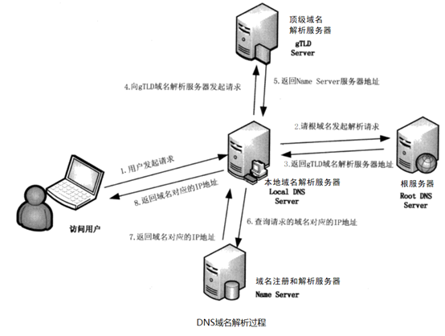
再来看结合区块链技术的奥丁号解析过程，如下图所示：

对比上面两图的差异可以看到，奥丁号用比特币区块链取代了传统DNS体系里根服务器的控制角色，达成自主、可信、唯一和持久的新特性。同时在根奥丁号的解析和扩展奥丁号的注册解析上，能灵活支持各种不同的区块链平台，也能兼容采用传统服务器方案，具有很好的扩展性和适用性，这也是奥丁号区别于其它很多区块链域名采用单一链方案的鲜明特点之一。
在近期刚升级发布的PPk协议V2新版本里，对奥丁号（ODIN）增加了支持自定义托管解析服务(PNS, Peer Naming Service) ，其采用PPk的PTTP传输协议作为服务接口，支持区块链或网站等多种形式来承载标识设置数据，功能上类似传统域名体系里的OpenDNS这样的域名解析服务，不同之处在于所解析的是像奥丁号这样的链上标识或区块链域名了，很合适配合区块链应用。
此前，PPk技术社区已经分享了用传统的网站开发技术(PHP+Mysql)实现的托管解析PNS服务示例，详见：https://ppk001.sinaapp.com/docs/help_pns/
现在可以体验用比原MOV，以太坊ETH或者比特现金BCH等公链，来托管解析奥丁号，选择更灵活，详见下文说明。
一、在不同公链上设置奥丁号解析记录
需要先在比特币区块链上注册获得奥丁号（完全开放的自主注册，只需花费给比特币矿工的打包费用，而且一次注册持久有效，不需要再交年费。具体方法可以参考 https://ppk001.sinaapp.com/docs/help_ppkbrowser/ ）。
在获得你完全自主拥有和管理的奥丁号后，就可以选择比原MOV、以太坊ETH或比特现金BCH来设置解析记录，指向你所要关联展示的内容了，这个过程就像在传统域名服务里将域名设置指向你的网站IP地址，不同之处在于将传统域名服务商的私有数据库切换成了开放的公链。下面分别介绍下不同链的对应操作方法。
1.1 使用比原MOV侧链托管解析奥丁号
需要使用支持BAPP应用的比原钱包（Bycoin）或者Byone浏览器插件。这里以比较常用的 Bycoin应用为例进行介绍。关于Bycoin的安装使用方法可以在网络上搜索查看, 或参考下述链接：
使用说明: https://www.chainnode.com/post/287660
下载链接: https://blockmeta.com/wallet/
打开安装好的比原Bycoin应用，点击下方的“BAPP”图标进入, 从BAPP列表中选择“PPk比原数字资产命名查询工具”后点击“使用比原MOV侧链托管解析奥丁号”，或者直接输入网址https://ppk001.sinaapp.com/pns/ 即可访问，如下图所示：
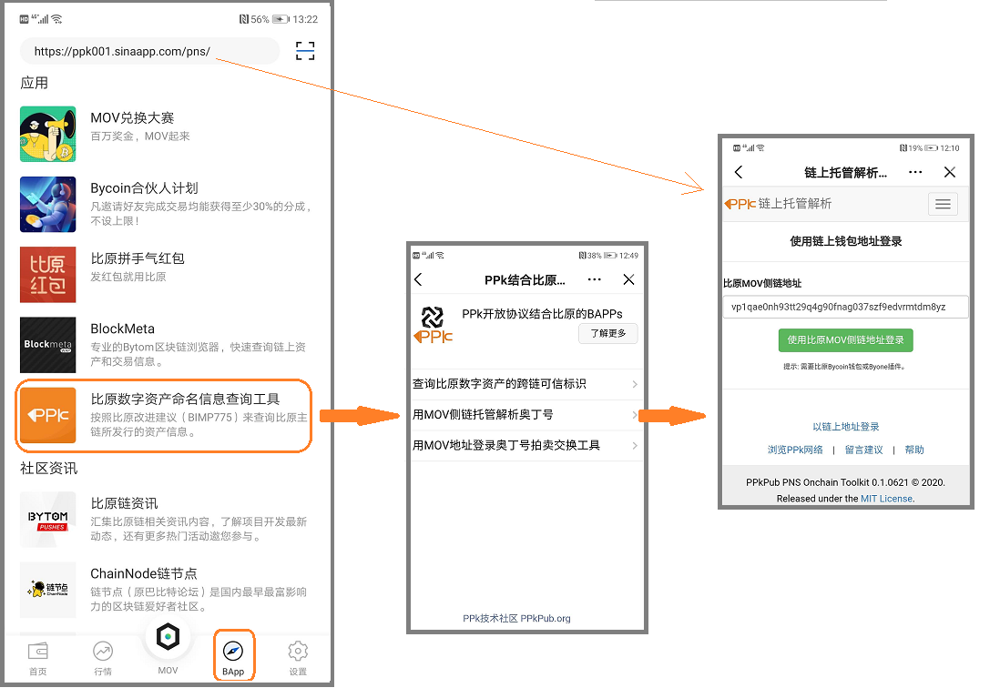
注：首次打开时，会提示需要授权访问你的比原钱包地址信息，确认通过即可。
确认显示的当前比原MOV侧链钱包地址正确后，点击“使用比原MOV侧链地址登录”按钮，进入下一步，如下图所示：
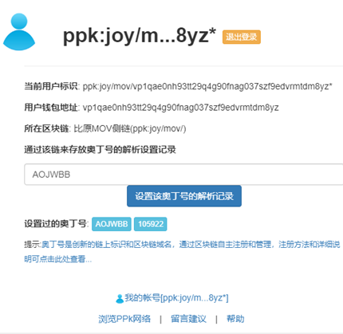
注：上图中显示的“用户标识”信息为
ppk:joy/mov/vp1qae0nh93tt29q4g90fnag037szf9edvrmtdm8yz*
其中的“ppk:joy/mov/”就是在本示例里对应比原MOV侧链的标识，并作为前缀再加上用户的钱包地址vp1qae0nh93tt29q4g90fnag037szf9edvrmtdm8yz就构成了用户的唯一标识 。
现在就可以输入你要在MOV侧链上托管解析的奥丁号了，比如输入105922这样的数字奥丁号，也可以输入要托管的具体英文名称如AOJWBB。输入后点击“设置该奥丁号的解析记录”，即可打开设置解析记录的界面，如下图所示：
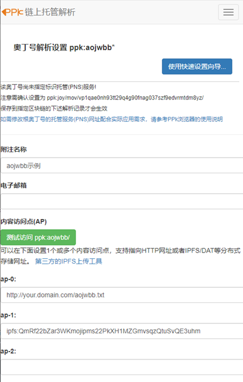
类似对传统域名里会设置若干条名称与IP地址的对应关系，在奥丁号的解析设置里，主要是设置一个或多个对应的内容访问点的URI网址（可关联支持“http:”、“ipfs:”或者“ppk:”等起始的多种内容协议），保存设置后，通过支持奥丁号的浏览器就可以访问到对应内容了。
我们可以先从最简单的设置进行体验，点击“使用快速设置向导”按钮，显示如下图所示：
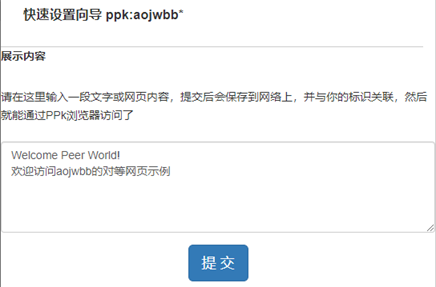
在这里随意编辑输入一段要展示的示例文字，再点击“提交”按钮，显示如下图所示：
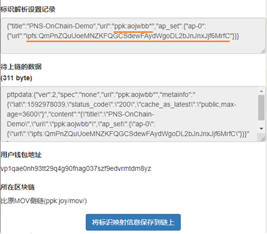
在上图里提示下划线初可以看到，已经将用户输入的文字内容上传到类似BT网络的IPFS分布式存储，获得了一个"ipfs:"起始的内容网址，并将该网址与对应的奥丁号“ppk:aojwbb”组织在一起，构成了一条奥丁号的解析设置记录。进一步就可以将这条解析记录通过发送交易的形式，被区块链收录保存生效后，访问者输入“ppk:aojwbb/”这样的网址，就能通过对应区块链来读取解析设置记录，并最终看到所关联指向的内容信息。
现在点击“将标识映射信息保存到链上”按钮，将弹出提示输入钱包密码，以确认发送交易的小窗口，如下图所示：
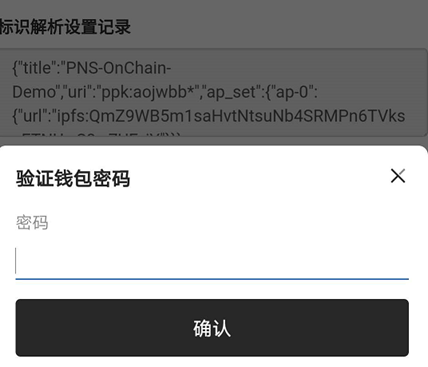
输入正确钱包密码后点击“确认”,就可以发送附带有奥丁号解析设置记录的比原MOV交易了，发送成功后如下图所示：
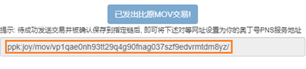
等所发送的交易被对应区块链确认收录后，类似上图中橙色方框标注的网址“ppk:joy/mov/ vp1qae0nh93tt29q4g90fnag037szf9edvrmtdm8yz/”就会生效，并能用作你输入的奥丁号的解析服务地址了。
可以通过比原MOV侧链的区块浏览器(http://vapor.blockmeta.com/)查看所发送交易的详细信息，如下图所示：
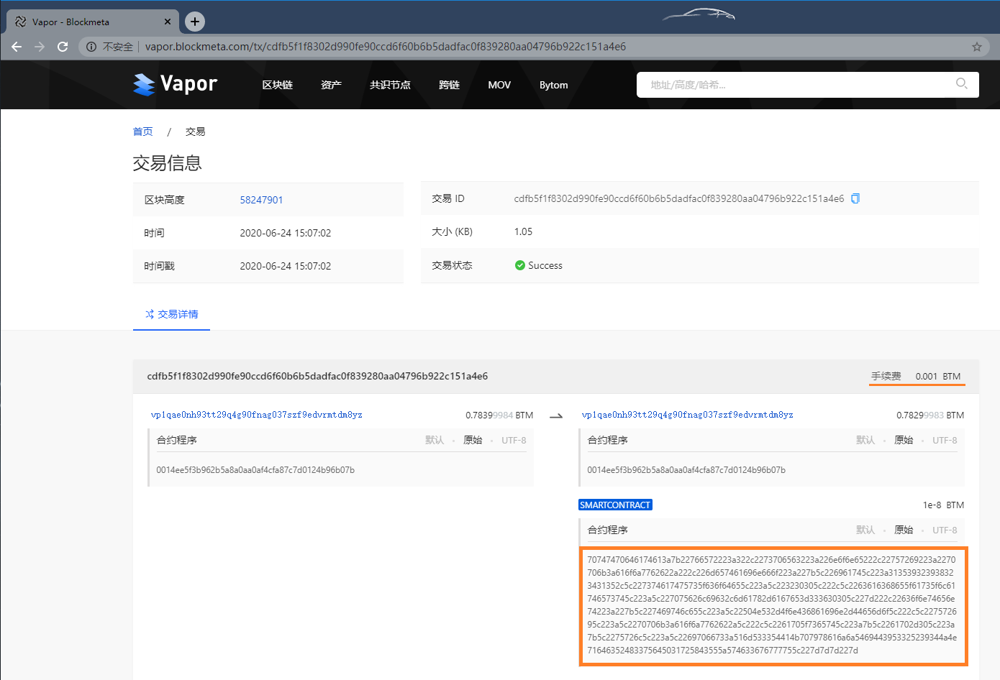
从上图中可以看到通过比原MOV设置托管解析记录，所需费用就是标准的MOV交易手续费（0.001BTM），而方框处则是以比原合约形式打包嵌入的奥丁号解析设置数据块，是完全开放存放在比原MOV侧链上，按一定规则解码出原始记录就可以解析得到所指向的实际内容地址了。
1.2 使用以太坊Ethereum托管解析奥丁号
需要使用支持DAPP应用的以太坊钱包（Bitpie和ImToken）或者Metamask浏览器插件。这里以比较常用的 Metamask插件为例进行介绍。关于Metamask浏览器插件的安装使用方法可以在网络上搜索查看（如https://www.jianshu.com/p/bd82aab0b697）
打开安装好Metamask插件的Chrome浏览器后，点击浏览器右上角的Metamask图标，可以选择钱包使用的以太坊网络，默认是“以太坊主网络“，体验测试也可以选择”Rinkeby测试网络“。此处作为示例，我们选择使用”Rinkeby测试网络“，如下图所示：
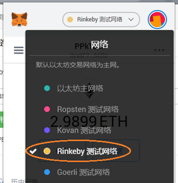
设置好以太坊网络后，在浏览器网址栏里输入 https://ppk001.sinaapp.com/pns/ 即可访问奥丁号链上托管解析设置工具，显示如下图所示：
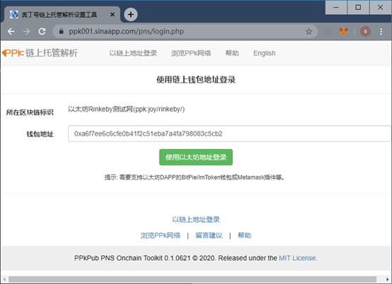
注1：上图中显示的“所在区块链标识”信息为“以太坊Rinkeby测试网(ppk:joy/rinkeby/)”，其中的“ppk:joy/rinkeby/”就是采用奥丁号命名格式并对应以太坊Rinkeby测试链的识别标识，以区分于其它链（比如以太坊主链是“ppk:joy/eth/” ，比原MOV侧链是“ppk:joy/mov/” ， 比特现金是“ppk:bch/”,等等）。
注2：首次打开时，Metamask插件会提示需要授权访问你的以太坊钱包地址信息，确认通过即可。
确认显示的当前以太坊区块链和钱包地址正确后，点击“使用以太坊地址登录”按钮，进入下一步，如下图所示：
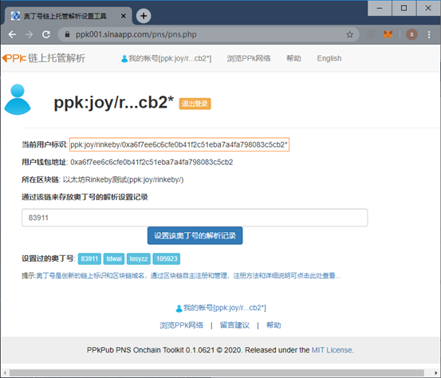
注：上图中显示的“用户标识”信息为
ppk:joy/rinkeby/0xa6f7ee6c6cfe0b41f2c51eba7a4fa798083c5cb2*
其中的“ppk:joy/rinkeby/”就是对应以太坊Rinkeby测试链的标识，并作为前缀再加上用户的钱包地址0xa6f7ee6c6cfe0b41f2c51eba7a4fa798083c5cb2hi就构成了用户的唯一标识 。
这时就可以输入你要在Rinkeby测试链上托管解析的奥丁号了，比如输入83911这样的数字奥丁号，也可以输入要托管的具体英文名称如tdwai。输入后点击“设置该奥丁号的解析记录”，即可打开设置解析记录的界面，如下图所示：
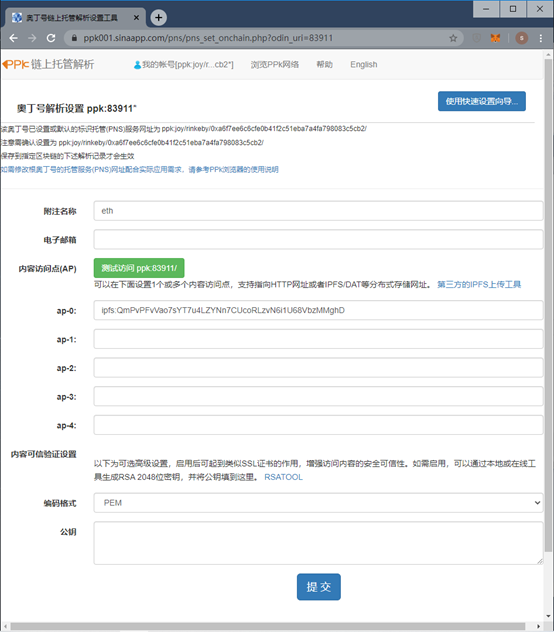
类似对传统域名里会设置若干条名称与IP地址的对应关系，在奥丁号的解析设置里，主要是设置一个或多个对应的内容访问点的URI网址（可关联支持“http:”、“ipfs:”或者“ppk:”等起始的多种内容协议），保存设置后，通过支持奥丁号的浏览器就可以访问到对应内容了。
我们可以先从最简单的设置进行体验，点击“使用快速设置向导”按钮，显示如下图所示：
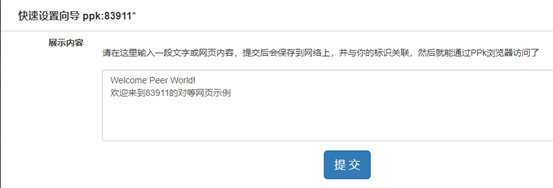
在这里随意编辑输入一段要展示的示例文字，再点击“提交”按钮，显示如下图所示：
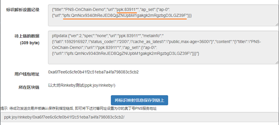
在上图里可以看到，已经将用户输入的文字内容上传到类似BT网络的IPFS分布式存储，获得了一个"ipfs:"起始的内容网址，并将该网址与对应的奥丁号“ppk:83911”组织在一起，构成了一条奥丁号的解析设置记录。进一步就可以将这条解析记录通过发送交易的形式，被区块链收录保存生效后，访问者输入“ppk:83911/”这样的网址，就能通过对应区块链来读取解析设置记录，并最终看到所关联指向的内容信息。
现在点击“将标识映射信息保存到链上”按钮，将调用Metamask插件弹出提示确认发送交易的小窗口，如下图所示：
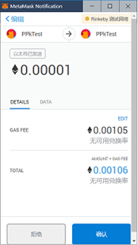
确认交易内容正确（发送和接受地址都是自己，转账金额默认为0.00001），然后点击“确认”就可以发送附带有奥丁号解析设置记录的以太坊交易了，发送成功后如下图所示：
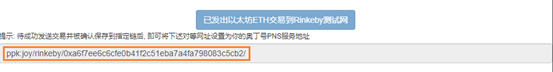
等所发送的交易被对应区块链确认收录后，类似上图中橙色方框标注的网址“ppk:joy/rinkeby/0xa6f7ee6c6cfe0b41f2c51eba7a4fa798083c5cb2/”就会生效，并用作你输入的奥丁号的解析服务地址了。
可以通过以太坊Rinkeby测试链的区块浏览器(https://rinkeby.etherscan.io/)查看所发送交易的详细信息，如下图所示：
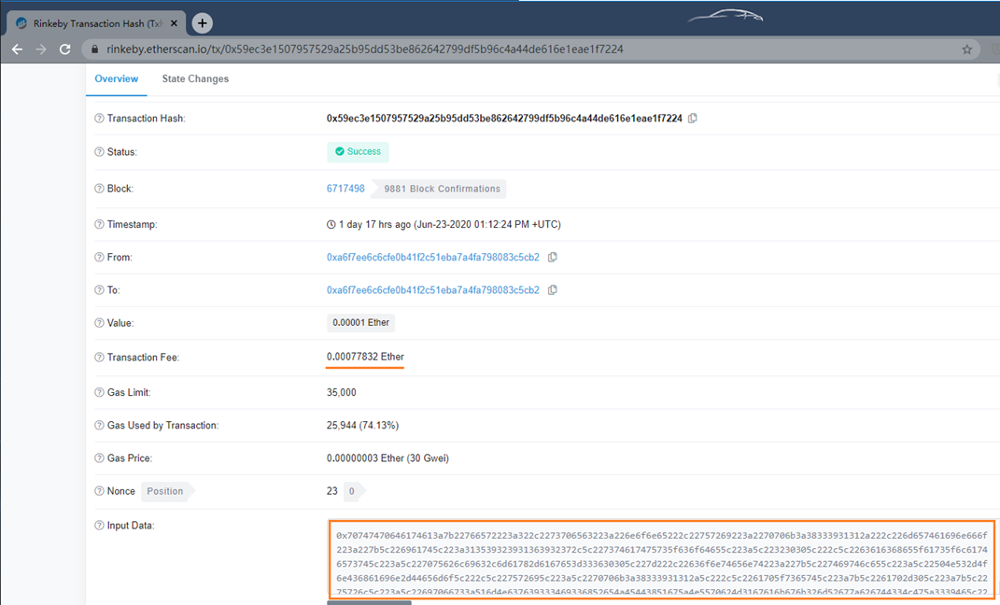
从上图中可以看到通过以太坊设置托管解析记录，所消耗费用就是以太坊交易手续费（约0.000778 ETH），而方框处则是以交易备注形式打包嵌入的奥丁号解析设置数据块，是完全开放存放在以太坊链上，按一定规则解码出原始记录就可以解析得到所指向的实际内容地址了。
1.3 使用比特现金BitcoinCash托管解析奥丁号
需要使用支持比特现金的PPkBrowser安卓应用。安装使用方法可以参考下述链接：
https://ppk001.sinaapp.com/docs/help_ppkbrowser/
安装和打开PPkBrowser安卓应用，输入网址 ppk:joy/pns/ 或者 https://ppk001.sinaapp.com/pns/ 即可访问，显示如下图所示：
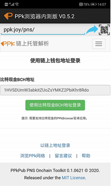
确认显示的当前比特现金BCH钱包地址正确后，点击“使用比特现金BCH地址登录”按钮，进入下一步，如下图所示：
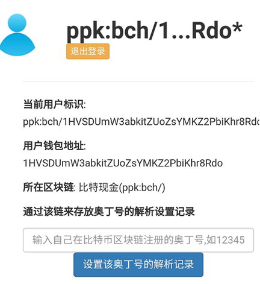
注：上图中显示的“用户标识”信息为
ppk:bch/1HVSDUmW3abkitZUoZsYMKZ2PbiKhr8Rdo*
其中的“ppk:bch/”就是对应比特现金BCH链的标识，并作为前缀再加上用户的钱包地址 1HVSDUmW3abkitZUoZsYMKZ2PbiKhr8Rdo 就构成了用户的唯一标识 。
这时就可以输入你要托管解析的奥丁号了，后续设置操作与上述使用比原链或者以太坊插件是一样的，此处不再具体复述。在设置成功后会拿到一个类似“ppk:bch/1HVSDUmW3abkitZUoZsYMKZ2PbiKhr8Rdo/”的网址,如下图所示，就可用作你所输入的奥丁号的解析服务地址了。
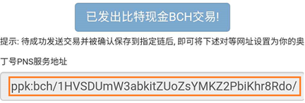
可以通过比特现金BCH的区块浏览器(如https://bch.btc.com/ )查看所发送交易的详细信息，如下图所示：

从上图中可以看到通过比特现金BCH设置托管解析记录，所需费用就是交易手续费（0.00001BCH），而方框处则是备注OP_RETURN形式打包嵌入的奥丁号解析设置数据块，是完全开放存放在比特现金BCH链上，按一定规则解码出原始记录就可以解析得到所指向的实际内容地址了。
二、在比特币区块链上启用新的解析设置
通过以上三种示例方式之一，在对应公链上设置你的根奥丁号解析记录后，下面就需要到比特币区块链上启用这个解析记录了，这时需要用到PPk的开源工具，可以选择PPkBrowser安卓APP或者电脑桌面版的PPkJavaTool。这里以PPkBrowser安卓APP为例，如尚未安装，可以参考这里的说明进行安装：https://ppk001.sinaapp.com/docs/help_ppkbrowser/
打开已安装好的PPkBrowser安卓APP，导入你注册奥丁号时使用的BTC地址私钥，就可以管理你在比特币链上注册的根奥丁号了。
按照操作说明（https://ppk001.sinaapp.com/docs/help_ppkbrowser/#s04）,打开奥丁号管理工具后，选择对应的根奥丁号，点击查看其详细信息，再点击“更新”按钮，显示如下图所示：
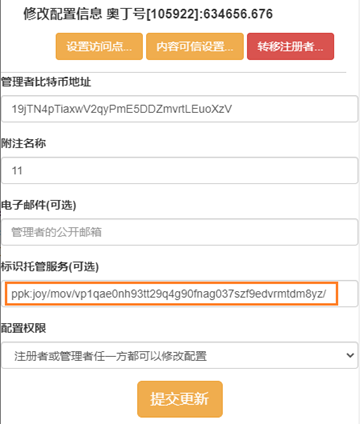
在“标识托管服务”一栏输入你已获得的链上解析服务地址，点击“提交更新”，等待所发送的比特币交易确认后就生效了,然后在PPkBrowser的网址栏里输入所设置的奥丁号对应网址如“ppk:aojwbb/”就能访问到所指向的测试内容了,如下图所示：
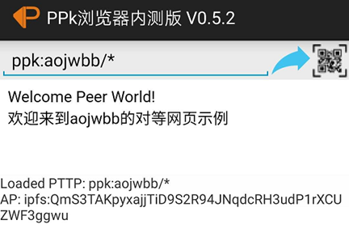
注：
1. 在比特币链上更新托管解析PNS服务地址后，如果所使用钱包地址没有变动，只需要第一次更新生效即可，后续在所托管链上做的更新会直接生效，不需要到比特币链上重复操作，可以少花费比较贵的比特币交易费用。
2. 数字奥丁号和其对应的英文标识共用在比特币区块链上的同一设置，不需要重复操作更新。
3. 如果需要将解析记录切换托管到其它链上，则在新链上获得新的标识托管解析PNS服务地址后，再到比特币链上操作更新即可。
三、示例总结
简单比较下在不同公链托管奥丁号收获的体会，如下表所示：
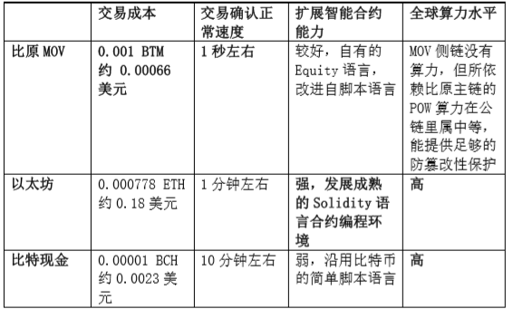
从上表的不完全对比情况看，不同公链都有其优势所在。通过PPk开放协议的设计，在自主标识上，用户就可以灵活地自主选用对自己最合适的链，可以根据应用需求随时动态调整，而不是只能唯一受制于单一链，这也是PPk开发协议“居中衔接”底层区块链和上层应用的价值体现。
------------------------------------------------------------------------------------------------
PPk协议和工具都是完全开放开源的，可以从 ppkpub.org 详细了解，欢迎一起探讨和推动结合应用。
关于奥丁号
奥丁号是自主注册和管理的链上标识，是创新的链上标识和区块链域名，是适配区块链新业态的通用名号和门牌号。
奥丁号可以兼容DID和oAuth协议，来灵活配合应用结合区块链技术的登录验证需求。在应用里嵌入奥丁号登录功能有多种方式灵活可选，应用开发者很容易参考实现 （具体可参考 https://www.chainnode.com/post/382517）。最重要的改变是对于用户来说通过区块链技术拥有了一个自主的ID，而不是一个类似微博或微信的被平台所控制的账户，从而为进一步开发出更有意思的新应用建立一个基础，近期PPk技术社区还会相应推出进一步的应用案例。
关于PPk开放协议
PPk是一个代号，取意自“Peer-Peer network&kits”。PPk首先是一个开放的技术社区，由PPk技术社区融合区块链和网络通信技术，定义了对等可信的PPk开放协议。PPk开放协议目前包括三部分：ODIN（Open Data Index Name 即开放数据索引命名标识），PTTP（Peer Trusted Transfer Protocol即对等可信传输协议）以及PTAP（Peer Trusted Application Protocols即对等可信应用扩展协议），简单介绍如下：
1. ODIN 基于区块链技术定义的自主命名标识，作用类似DNS，
2. PTTP 基于ODIN标识和NDN架构设计的新型传输协议，
作用类似HTTP
3. PTAP 基于ODIN标识和PTTP传输协议的应用扩展协议，类似WEB上的具体应用协议，可以具体实现如 OpenID认证, oAuth授权, ODATA开放数据等不同应用协议的角色

PPk开放协议具有鲜明的独特创新性。ODIN标识以BTC为核心+多级扩展+支持灵活映射其它链和传统技术平台+非传统抢注模式的命名机制，自主、对等、安全和可信，更为重要的是，PPk开放协议不停留在标识协议层面，而是进一步融合到ICN/NDN未来互联网体系架构中，发展出对等、可信、高效的信息交换开放协议即PTTP对等可信传输协议，更好地“衔接”底层区块链和上层应用，通过多层合作破局和推动新业态快速发展，带来更大的应用和市场潜力。
跨链项目已渐成热点，链上自主标识也将发力，PPk技术社区推动的奥丁号，将发展成为区块链新世界的通用名号和门牌号。
包含奥丁号在内的PPk开放协议，其真正潜力发挥需要适配区块链技术进一步落地应用，带动对等可信业态即PeerWeb/WEB3.0，从而将对区块链域名的需求充分调动出来，这还有一段发展过程。现在正合适更多有眼光有趣的朋友先了解、体验注册和尝试使用，在下一波真正能落地的业态牛市起来时可以发挥大作用。